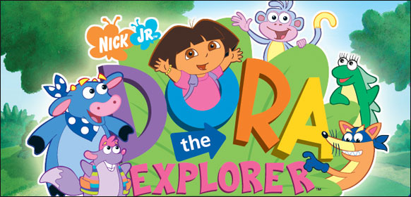
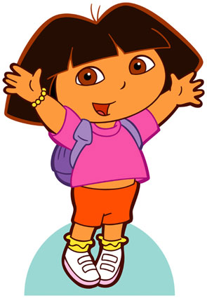

Dora The Explorer Type: TV Show
Dora and Boots, animal and Spanish human who solve problems and try and stop Swiper from doing so. They usually fail and he snatches their suff anyhow.
Characters:
 Dora
A very Spanish girl who knows Boots all around. She has a talking Backpack and Map. But they both require you to shout their names, of course, "Backpack" and "Map".
Boots (The Monkey)
This monkey is requinized by a very goden tail and a blue body, with a pink face and personality. He encourages you and Dora to join in in everything that they do.